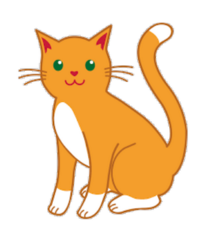

The Double Slit Experiment¶
Say hello to Bitly, the quantum cat.

Over the next few sections, Bitly will be introcuding you to a wacky, possibly unfamiliar field of physics: quantum physics! Classical physics is the field of physics that describes the movement of large objects, like planets and humans (and cats!). This is the field of physics that had been known to humans for a long time. However, at the start of the 20th century, classical physics was having a lot of trouble explaining the results of some puzzling experiments.
The rules that applied to large objects –like Newton’s laws to humans– did not make sense when applied to very small objects. A new theory —quantum theory— was developed to explain the behavior of quantum objects such as photons (particles of light), electrons, and other microscopic objects.
Let’s explore one of these troubling experiments now!
The first experiment can be compared to Bitly standing in front of an open door: say, the front door leading to the very forbidden outdoors. How would it get through the door, according to the laws of classical physics? Well, chances are it’d just pass right though, straight through the doorway, and come out fully on the other side. Cats may not care much for the laws of people, but they still obey the laws of physics! Scientists wanted to see if light would move through an opening the same way a cat might cross an open doorway.
Now, let’s exapnd this to an acutal experiment that was done in physics. Replace the cat with a light bulb, and the open doorway with a piece of paper that has two small slits carved into it. Imagine a light bulb shining on two slits in a piece of paper. A black screen is placed behind the slits, so that a scientist can see where the light goes. This is called the “double-slit” experiment.
What do you think the pattern on the screen will look like?¶
Options:
Two bright regions on the left and right, where the slits are
Bright regions at intervals across the screen
A bright spot in the middle of the screen
There would be bright regions at intervals across the screen.
You probably thought there would be two bright spots on the left and right of the screen, corresponding to the position of the slits.
The bright spots should correspond to the location of the slits. This thinking isn’t wrong at all! This is exactly what classical physics predicted. At that time, light was thought to be composed of many small particles, called photons. Scientists thought that a given particle would go through either the left or the right slit. Since millions of these particles in a beam of light would be making this decision every second, the final result should just be two bright spots!
However, what scientists actually saw was this:
This pattern of alternating bright and dark lines is what you would see if light was a wave. Just like ripples in a pond, the waves would pass through both slits and interfere with each other, causing peaks (bright spots) and troughs (dark spots) to appear.
How could light be both a particle and a wave? How could it behave like a particle sometimes, and a wave at others?
Things got even crazier when the experiment was repeated with a single photon.
What do you think the outcome of this experiment was?¶
Options:
One bright spot on the screen
An interference pattern
No bright spots
An interference pattern would be observed.
According to classical physics, a single particle should go through either the left of the right slit, so there should only be a single bright spot on the screen. But here’s the crazy part—instead, the exact same interference pattern was observed.
A whole branch of physics, called quantum mechanics, had to be invented just to explain this! The only logical explanation is that the photon passes through both slits at once, then interferes with itself. This would mean that the single photon was behaving like a wave! This interference leads to peaks where the waves build up on each other, and troughs where the waves cancel each other out. This idea that the photon can be in multiple places at once is called superposition, and it’s a very important principle in quantum physics. The interference of two waves that causes a superposition is shown below.

Cats supposedly enjoy playing with yarn. Sometimes, that yarn comes from a ball, and at other times, it comes from destroying your sweater! Superposition is sort of like a sweater knitting pattern this way: one side of the fabric might look like a knit stitch, and the other like a purl stitch! It’s the superposition of theses stitches that creates the pattern and texture.

Scientists tried to measure the exact location of the photon by placing detectors on each slit. When they did this, they found that the result of the experiment was no longer an interference pattern but a single bright spot —almost as if the photon knew it was being measured and decided to behave classically just to spite them!
The idea that the outcome of an experiment can depend on whether or not someone is actively trying to observe it may seem crazy—but it’s a fundamental principle of quantum mechanics.